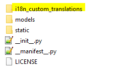
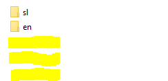
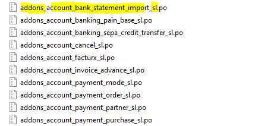

<section class="oe_container oe_dark">
    <div class="oe_row">
        <div class="oe_span12">
            <h4 class="oe_slogan">How to use</h4>
			<ul>
				<li style="color:#30054D;font-weight:bold;">This module has a repository of files that are checked on every module install or update.</li>
			</ul>
			
			<br><br>
			<ul>
				<li style="color:#30054D;font-weight:bold;">For multi language purpose the repository is subdivided for every language (iso code)</li>
			</ul>
			<br /><br />
			<ul>
				<li style="color:#30054D;font-weight:bold;">Every language directory has a list of (.PO) files needed for upload. On update this modul check if a module is installed and language is activated.</li>
				<li style="color:#30054D;font-weight:bold;">The file must be named with the correct syntax ([a-zA-Z0-9]+)_([a-zA-Z0-9_]+)_([[iso lang]])\.po, this mean that ther must be 3 parts: Group (odoo, addons, custom, ...), the name of the module (crm_claim) and language that must match with the name of the directory (prevent user error for loading the wrong language file)</li>
			</ul>
			
			<br><br>
        </div>
    </div>
</section>
